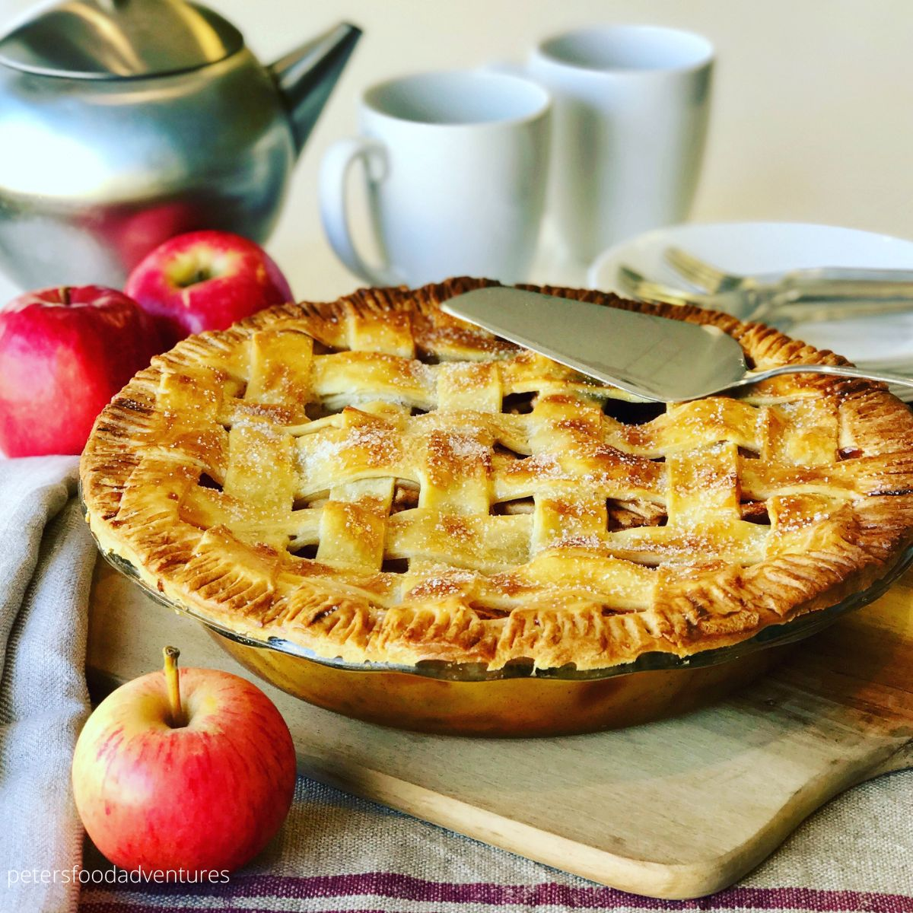

APPLE PIE RECIPE

Ingredients for Pie Filling:
- Apples (peeled, cored, and sliced): 6 cups
- Granulated sugar: ¾ cup
- All-purpose flour: 2 tablespoons
- Ground cinnamon: 1 teaspoon
- Ground nutmeg: ¼ teaspoon
- Butter (unsalted, diced): 2 tablespoons
- 1 egg for egg wash (optional)
Ingredients for Pie Crust:
- All-purpose flour: 2 ½ cups
- Butter (unsalted, cold, diced): 1 cup
- Granulated sugar: 1 teaspoon
- Salt: 1 teaspoon
- Cold water: 6-8 tablespoons
Method:
- Preheat the oven to 375°F (190°C).
- For the pie crust, mix flour, sugar, and salt in a bowl. Cut in the cold diced butter until the mixture resembles coarse crumbs. Add cold water gradually, mixing until the dough comes together. Divide the dough into two parts (for top and bottom crusts), wrap in plastic, and chill in the refrigerator for at least 30 minutes.
- For the filling, combine sliced apples, sugar, flour, cinnamon, and nutmeg in a large bowl. Toss until the apples are coated evenly.
- Roll out one portion of the chilled dough on a floured surface to fit a pie dish. Transfer it to the pie dish.
- Add the apple filling into the pie crust. Dot the filling with diced butter.
- Roll out the remaining dough and place it over the filling. Trim and crimp the edges to seal the pie. Cut slits on the top crust for ventilation. Optionally, brush the top crust with beaten egg for a golden finish.
- Bake in the preheated oven for 45-55 minutes, until the crust is golden brown and the filling is bubbly.
- Let the apple pie cool before slicing. Serve with ice cream or whipped cream if desired.
Apple Pie is Ready to Enjoy!!!